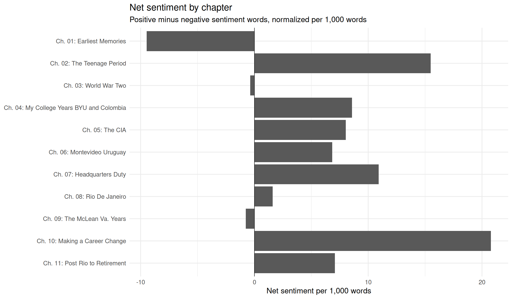
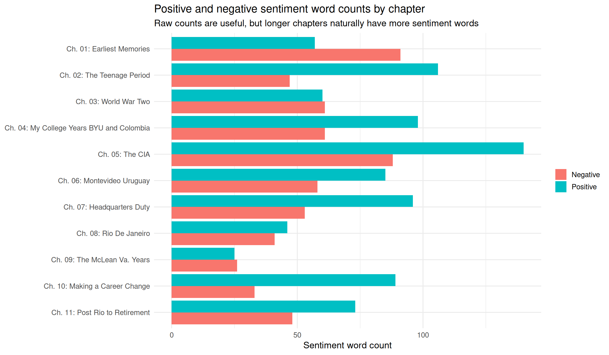
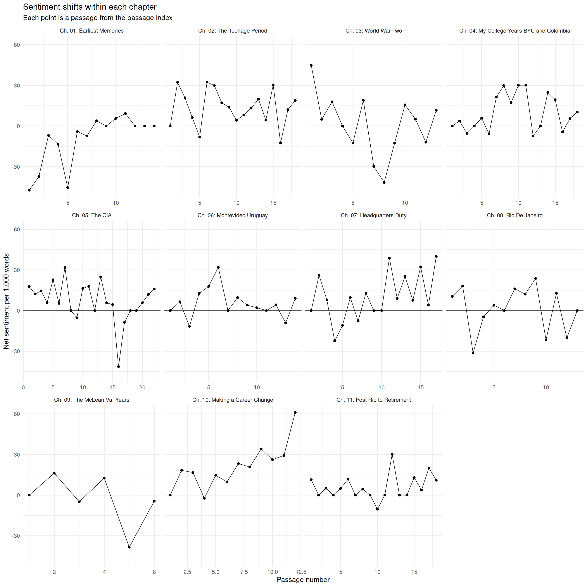

Sentiment Analysis
This page shows two complementary sentiment views:
- Sentiment by chapter — a chapter-level summary of positive and negative language.
- Sentiment within each chapter — passage-level sentiment so you can see where tone rises and falls inside a chapter.
The current method uses the tidytext Bing sentiment lexicon. This is a transparent dictionary-based method, not a model-generated interpretation. Treat it as a reading aid, not a final literary judgment.
Sentiment by chapter
This view compares chapters after adjusting net sentiment by chapter length. Positive values indicate more positive sentiment words per 1,000 words; negative values indicate more negative sentiment words per 1,000 words.

| Chapter | Title | Word count | Positive | Negative | Net sentiment | Net per 1,000 words | Sentiment words |
|---|---|---|---|---|---|---|---|
| 1 | Earliest Memories | 3592 | 57 | 91 | -34 | -9.465 | 148 |
| 2 | The Teenage Period | 3811 | 106 | 47 | 59 | 15.482 | 153 |
| 3 | World War Two | 2732 | 60 | 61 | -1 | -0.366 | 121 |
| 4 | My College Years BYU and Colombia | 4315 | 98 | 61 | 37 | 8.575 | 159 |
| 5 | The CIA | 6482 | 140 | 88 | 52 | 8.022 | 228 |
| 6 | Montevideo Uruguay | 3946 | 85 | 58 | 27 | 6.842 | 143 |
| 7 | Headquarters Duty | 3938 | 96 | 53 | 43 | 10.919 | 149 |
| 8 | Rio De Janeiro | 3136 | 46 | 41 | 5 | 1.594 | 87 |
| 9 | The McLean Va. Years | 1313 | 25 | 26 | -1 | -0.762 | 51 |
| 10 | Making a Career Change | 2694 | 89 | 33 | 56 | 20.787 | 122 |
| 11 | Post Rio to Retirement | 3532 | 73 | 48 | 25 | 7.078 | 121 |
Sentiment within each chapter
This view uses the passage index. Each point is one passage. This is closer to what the original app was trying to show: not just whether a whole chapter trends positive or negative, but where the tonal shifts occur inside the chapter.

Strongest passage-level shifts
These are useful review targets. They show where the lexicon method finds the strongest positive and negative passages. Read these against the original text before making interpretive claims.
| Direction | Citation | Net per 1,000 words | Positive | Negative | Years | Entities | Preview |
|---|---|---|---|---|---|---|---|
| Most positive | Ch. 10: Making a Career Change, passage 12 | 60.976 | 18 | 3 | NA | NA | | could make the transition from the world of espionage to the outside world. My general thrust was to have them inventory their various skills and talents -not as intelligence officers, per se but in their dealing with humans beings. Most were highly educated, academically, but there is no such thing as a formal ty… |
| Most positive | Ch. 3: World War Two, passage 1 | 44.776 | 10 | 1 | NA | NA | GHAPTER THREE World War Two ! CHAPTER THREE PART ONE As I have mentioned I enlisted in the U. S. Navy on October 23, 1942, having completed successfully the exam to qualify me for training as an Electronics Technician. I went to Treasure Island (same place we had visited two years earlier for the World’s Fair) for i… |
| Most positive | Ch. 7: Headquarters Duty, passage 11 | 38.710 | 8 | 2 | NA | NA | In the fall of 1961, I left the Requirements component and was made Deputy Chief of the Soviet Division’s Counter-Intelligence Branch. I served approximately one year in this component and it was during this time that several of the most important defectors from Soviet military and intelligence came into our hands, … |
| Most positive | Ch. 10: Making a Career Change, passage 9 | 34.091 | 4 | 1 | NA | NA | aa year. While I was able to keep myself fairly well involved in this activity, particularly with regard to the higher graded officers, I delegated the major part of individual counseling cases to my staff, all of which continued to be composed of experienced operations officers, including female officers, although … |
| Most positive | Ch. 2: The Teenage Period, passage 6 | 32.407 | 9 | 2 | NA | NA | with my sister Loverna and her husband Al (Lester Allan Harris). They lived in Pomona, California where they had rented a house which had some grape arbors and chicken coops . which had been flooded. In the summer I worked primarily at cleaning out the chicken coops which had a layer of about | four inches of silt f… |
| Most positive | Ch. 2: The Teenage Period, passage 2 | 32.323 | 17 | 1 | NA | NA | CHAPTER TWO PART ONE I was ordained a Deacon in the Aaronic Priesthood on my birthday, April 1, 1934 by my Bishop, Louis F. Nuffer. Later when I was in high school he was also my biology teacher. Passing the sacrament in those days was a stiffly formal affair. We all had to wear white shirts and black bow ties and a… |
| Most positive | Ch. 7: Headquarters Duty, passage 15 | 32.258 | 6 | 1 | NA | NA | accommodations were usually quite adequate and there was ample opportunity to see parts of the United States which we had never seen before from our automobile trips. We did have some excitement on the trip when just outside of Chicago Someone threw a rock at the train and it hit the window right next to where Gail … |
| Most positive | Ch. 6: Montevideo Uruguay, passage 6 | 31.963 | 7 | 0 | NA | NA | After studying some Spanish part-time for only about Six weeks in the late summer of 1957, we were assigned to the Soviet Section of our station in Montevideo, Uruguay. We left New York on the S.S. Brazil, a luxury liner of the Moore-McCormack lines. It was a two week trip and very enjoyable. The kids all had a ball… |
| Most positive | Ch. 5: The CIA, passage 7 | 31.746 | 9 | 3 | NA | NA | which were conducted in English. The German saints were still suffering a lot as a result of the war and didn’t have much in terms of assets but they were very generous. On one occasion, shortly after we arrived, we were at a branch dinner and the only thing being served was a weisswurst, a large white sausage, fill… |
| Most positive | Ch. 2: The Teenage Period, passage 15 | 30.303 | 6 | 2 | NA | NA | of the U.S. Pacific fleet. I was loafing at the boarding house between Sunday school and sacrament meeting when the radio announced the attack on Pearl Harbor. The next day Japanese troops attacked the Philippines, Hongkong, Thailand and British Malaya and the U.S. and Great Britain declared war on Japan. By Dec. 11… |
| Most negative | Ch. 1: Earliest Memories, passage 1 | -47.393 | 0 | 10 | NA | NA | CHAPTER ONE PART ONE According to the brief history of my father (as told to my sister, Ila Rose, by my father’s half-sister, Mary | Anderson) he owned a homestead in the Lone Pine country | twenty miles east of Idaho Falls. The family stayed on this : homestead following Loverna’s birth in 1916, until they got , th… |
| Most negative | Ch. 1: Earliest Memories, passage 5 | -45.455 | 3 | 14 | NA | NA | Utah was able to obtain some settlement for this accident but he managed to make off with most of the money much to my poor mother’s consternation. I don’t think that she ever trusted a lawyer again. My father died in 1929 (February 5) after being ill quite a bit of the time previously. I recall of having gone to th… |
| Most negative | Ch. 3: World War Two, passage 8 | -41.667 | 0 | 5 | NA | NA | | bomb which did extensive damage to the lower decks, the hangar deck and the mess deck. This required the ship to return to Pearl Harbor and subsequently to the States (Bremerton, Washington) for extensive repairs. A couple of things happened while the ship was under repair in | Bremerton, Washington. On April 12, … |
| Most negative | Ch. 5: The CIA, passage 16 | -41.379 | 3 | 15 | NA | NA | The dictator of the Soviet Union , Joseph V. Stalin, died in early 1953 and we anticipated that his death would cause some changes if not an upheaval in the Soviet Union. This was true to a certain extent but it did not occur as rapidly as we thought it might. Our operational activity of infiltrating the U.S.S:.R co… |
| Most negative | Ch. 9: The McLean Va. Years, passage 5 | -38.462 | 2 | 11 | NA | NA | The year 1968 was one of turmoil in the United States, both because of the Vietnam War and also because of racial issues. Martin Luther King, the leader of the drive for equality for the black people, was killed in Memphis and this incident set off a wave of rioting throughout the United States. In Washington, D.C. … |
| Most negative | Ch. 1: Earliest Memories, passage 2 | -37.313 | 1 | 6 | NA | NA | Sometime during this early period, my Dad fell off the roof of our house and because of it and other problems developed quite poor health. This must have affected his work situation and as a consequence the family decided to move to Mesa, Arizona. This move took place about the middle of May, 1926. We have a photogr… |
| Most negative | Ch. 8: Rio De Janeiro, passage 3 | -31.414 | 1 | 7 | NA | NA | Our travel to Brazil was originally scheduled by ocean liner, the Moore-McCormack Lines again, to sail on June 25th. However, this was thwarted by a strike of the maritime workers so we had to delay to see if this strike would be settled. Having sold our house we stayed Cemporarily with the O’Bryants, a period of ti… |
| Most negative | Ch. 3: World War Two, passage 7 | -29.787 | 3 | 10 | NA | NA | Some of the engagements were pretty exciting (they were never dull!). The carrier was the central ship of a task force since upon the aircraft depended much of the offensive power of the Navy. Consequently, the carrier was surrounded and escorted by battleships, cruisers, and destroyers which were constantly patroll… |
| Most negative | Ch. 7: Headquarters Duty, passage 4 | -22.422 | 0 | 5 | NA | NA | SS AE EE RS See RS ee Our second son, Hilton Richard, was born on Dec. 9, 1960, in a Washington, D.C. hospital so that all of our Children were born in different locations. On Christmas Day, following our Sacrament meeting, all the family, except Marion and Hilton, was involved in a head-on automobile accident just … |
| Most negative | Ch. 8: Rio De Janeiro, passage 10 | -21.739 | 1 | 6 | NA | NA | , we commonly used around the house. He would say, “Gail, telephone” or “Hilton, where are you?” We usually kept him on his perch on the front balcony where the ping-pong table was located. The children and the missionaries used to play a lot of ping-pong there and Fred would imitate the sound of the clock-clock of … |
Passage sentiment table
| Citation | Word count | Positive | Negative | Net sentiment | Net per 1,000 words | Direction | Years | Entities |
|---|---|---|---|---|---|---|---|---|
| Ch. 1: Earliest Memories, passage 1 | 211 | 0 | 10 | -10 | -47.393 | negative | NA | NA |
| Ch. 1: Earliest Memories, passage 2 | 134 | 1 | 6 | -5 | -37.313 | negative | NA | NA |
| Ch. 1: Earliest Memories, passage 3 | 144 | 1 | 2 | -1 | -6.944 | negative | NA | NA |
| Ch. 1: Earliest Memories, passage 4 | 519 | 6 | 13 | -7 | -13.487 | negative | NA | NA |
| Ch. 1: Earliest Memories, passage 5 | 242 | 3 | 14 | -11 | -45.455 | negative | NA | NA |
| Ch. 1: Earliest Memories, passage 6 | 245 | 1 | 2 | -1 | -4.082 | negative | NA | NA |
| Ch. 1: Earliest Memories, passage 7 | 272 | 3 | 5 | -2 | -7.353 | negative | NA | NA |
| Ch. 1: Earliest Memories, passage 8 | 258 | 8 | 7 | 1 | 3.876 | positive | NA | NA |
| Ch. 1: Earliest Memories, passage 9 | 229 | 4 | 4 | 0 | 0.000 | neutral | NA | NA |
| Ch. 1: Earliest Memories, passage 10 | 178 | 3 | 2 | 1 | 5.618 | positive | NA | NA |
| Ch. 1: Earliest Memories, passage 11 | 108 | 1 | 0 | 1 | 9.259 | positive | NA | NA |
| Ch. 1: Earliest Memories, passage 12 | 492 | 15 | 15 | 0 | 0.000 | neutral | NA | NA |
| Ch. 1: Earliest Memories, passage 13 | 507 | 10 | 10 | 0 | 0.000 | neutral | NA | NA |
| Ch. 1: Earliest Memories, passage 14 | 90 | 1 | 1 | 0 | 0.000 | neutral | NA | NA |
| Ch. 2: The Teenage Period, passage 1 | 6 | 0 | 0 | 0 | 0.000 | neutral | NA | NA |
| Ch. 2: The Teenage Period, passage 2 | 495 | 17 | 1 | 16 | 32.323 | positive | NA | NA |
| Ch. 2: The Teenage Period, passage 3 | 144 | 4 | 1 | 3 | 20.833 | positive | NA | NA |
| Ch. 2: The Teenage Period, passage 4 | 160 | 4 | 3 | 1 | 6.250 | positive | NA | NA |
| Ch. 2: The Teenage Period, passage 5 | 247 | 5 | 7 | -2 | -8.097 | negative | NA | NA |
| Ch. 2: The Teenage Period, passage 6 | 216 | 9 | 2 | 7 | 32.407 | positive | NA | NA |
| Ch. 2: The Teenage Period, passage 7 | 234 | 10 | 3 | 7 | 29.915 | positive | NA | NA |
| Ch. 2: The Teenage Period, passage 8 | 233 | 6 | 2 | 4 | 17.167 | positive | NA | NA |
| Ch. 2: The Teenage Period, passage 9 | 216 | 7 | 4 | 3 | 13.889 | positive | NA | NA |
| Ch. 2: The Teenage Period, passage 10 | 239 | 5 | 4 | 1 | 4.184 | positive | NA | NA |
| Ch. 2: The Teenage Period, passage 11 | 246 | 10 | 8 | 2 | 8.130 | positive | NA | NA |
| Ch. 2: The Teenage Period, passage 12 | 227 | 5 | 2 | 3 | 13.216 | positive | NA | NA |
| Ch. 2: The Teenage Period, passage 13 | 151 | 3 | 0 | 3 | 19.868 | positive | NA | NA |
| Ch. 2: The Teenage Period, passage 14 | 229 | 3 | 2 | 1 | 4.367 | positive | NA | NA |
| Ch. 2: The Teenage Period, passage 15 | 132 | 6 | 2 | 4 | 30.303 | positive | NA | NA |
| Ch. 2: The Teenage Period, passage 16 | 159 | 1 | 3 | -2 | -12.579 | negative | NA | NA |
| Ch. 2: The Teenage Period, passage 17 | 248 | 5 | 2 | 3 | 12.097 | positive | NA | NA |
| Ch. 2: The Teenage Period, passage 18 | 265 | 6 | 1 | 5 | 18.868 | positive | NA | NA |
| Ch. 3: World War Two, passage 1 | 201 | 10 | 1 | 9 | 44.776 | positive | NA | NA |
| Ch. 3: World War Two, passage 2 | 203 | 3 | 2 | 1 | 4.926 | positive | NA | NA |
| Ch. 3: World War Two, passage 3 | 168 | 3 | 0 | 3 | 17.857 | positive | NA | NA |
| Ch. 3: World War Two, passage 4 | 175 | 3 | 3 | 0 | 0.000 | neutral | NA | NA |
| Ch. 3: World War Two, passage 5 | 239 | 5 | 8 | -3 | -12.552 | negative | NA | NA |
| Ch. 3: World War Two, passage 6 | 158 | 7 | 4 | 3 | 18.987 | positive | NA | NA |
| Ch. 3: World War Two, passage 7 | 235 | 3 | 10 | -7 | -29.787 | negative | NA | NA |
| Ch. 3: World War Two, passage 8 | 120 | 0 | 5 | -5 | -41.667 | negative | NA | NA |
| Ch. 3: World War Two, passage 9 | 158 | 2 | 4 | -2 | -12.658 | negative | NA | NA |
| Ch. 3: World War Two, passage 10 | 128 | 3 | 1 | 2 | 15.625 | positive | NA | NA |
| Ch. 3: World War Two, passage 11 | 197 | 2 | 1 | 1 | 5.076 | positive | NA | NA |
| Ch. 3: World War Two, passage 12 | 503 | 8 | 14 | -6 | -11.928 | negative | NA | NA |
| Ch. 3: World War Two, passage 13 | 258 | 11 | 8 | 3 | 11.628 | positive | NA | NA |
| Ch. 4: My College Years BYU and Colombia, passage 1 | 10 | 0 | 0 | 0 | 0.000 | neutral | NA | NA |
| Ch. 4: My College Years BYU and Colombia, passage 2 | 539 | 9 | 7 | 2 | 3.711 | positive | NA | NA |
| Ch. 4: My College Years BYU and Colombia, passage 3 | 548 | 13 | 16 | -3 | -5.474 | negative | NA | NA |
| Ch. 4: My College Years BYU and Colombia, passage 4 | 440 | 5 | 5 | 0 | 0.000 | neutral | NA | NA |
| Ch. 4: My College Years BYU and Colombia, passage 5 | 171 | 3 | 2 | 1 | 5.848 | positive | NA | NA |
| Ch. 4: My College Years BYU and Colombia, passage 6 | 169 | 2 | 3 | -1 | -5.917 | negative | NA | NA |
| Ch. 4: My College Years BYU and Colombia, passage 7 | 187 | 7 | 3 | 4 | 21.390 | positive | NA | NA |
| Ch. 4: My College Years BYU and Colombia, passage 8 | 134 | 4 | 0 | 4 | 29.851 | positive | NA | NA |
| Ch. 4: My College Years BYU and Colombia, passage 9 | 175 | 5 | 2 | 3 | 17.143 | positive | NA | NA |
| Ch. 4: My College Years BYU and Colombia, passage 10 | 133 | 5 | 1 | 4 | 30.075 | positive | NA | NA |
| Ch. 4: My College Years BYU and Colombia, passage 11 | 199 | 8 | 2 | 6 | 30.151 | positive | NA | NA |
| Ch. 4: My College Years BYU and Colombia, passage 12 | 135 | 0 | 1 | -1 | -7.407 | negative | NA | NA |
| Ch. 4: My College Years BYU and Colombia, passage 13 | 184 | 2 | 2 | 0 | 0.000 | neutral | NA | NA |
| Ch. 4: My College Years BYU and Colombia, passage 14 | 524 | 17 | 4 | 13 | 24.809 | positive | NA | NA |
| Ch. 4: My College Years BYU and Colombia, passage 15 | 103 | 2 | 0 | 2 | 19.417 | positive | NA | NA |